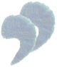

Gilipollas
 De: La Frikipedia, la enciclopedia extremadamente seria.
De: La Frikipedia, la enciclopedia extremadamente seria.
| De la serie tribus urbanas del mundo:
|
| Gilipollas
|
Ejemplo de la tribu

|
| Auténtico gilipollas
|
|
| Hábitat
|
tu casa
|
| Inteligencia
|
poca
|
| Frase favorita
|
¡Soy mucho más listo que tú!
|
| ¿Peligroso?
|
no
|
| Obsesión
|
las wikis, o algo que no conozca
|
| Notas
|
Malditos gilipollas
|
«Esta wiki me nombra continuamente en sus artículos y se burla de mí»
~ Gilipollas sobre la plantilla [[nombreusuario]]
«Ja!! ese tal IP anónima cuantas estupideces hace»
~ Gilipollas no colaborador de Frikipedia sobre la misma plantilla
«Auwawuoooooo...auwawuoooooo...auwawuooooojojojoooooooooooooooooooo...»
~ Gilipollas expresando libremente su homosexualidad
«Todos somos gilipollas (depende de las circunstancias)»
~ Gilipollas que se siente solo
«Un, dos tres, los micrófonos, un, dos, tres la pastilla»
~ Encontramos esta definición perfectamente en Iñaki Gabilondo,periodista de Cuatro
«Ya sé todo sobre los vampiros, he leído toda la saga de Crepúsculo»
~ Gilipollas defendiendo su sabiduría
Típico padre de un gilipollas
Persona con poco entendimiento, que está a favor de las guerras de Irak y Afganistán y es propensa a hacer cosas de las que se ríen todos sus "amigos".
Su inteligencia no le alcanza para vislumbrar que los que cree sus amigos, no sólo no lo son, sino que se comportan como cabrones al reírse y aprovecharse de él. Cuando a un gilipollas le mencionan con la palabra que mejor le define, suele contestar haciéndose el ingenioso: "De polla nada y de gili un metro", provocando así la burla y mofa de sus superiores.
Localización
Se les puede encontrar como participantes en El diario de Patricia, como concursantes de Humor Amarillo como invitados en "Laura en América" o en "Jerry Springer" o como periodistas del corazón y/o/u/e deportivos o en el hormigero la mayor reunion es en youtube. Hay muchos textos, imágenes y vídeos de gilipollas por internet, que se puede considerar una de las principales plataformas de difusión del fenómeno gilipollas, junto a la televisión y los SMS. También abundan en foros de internet como troll encubierto, que insulta cuando no sabe que decir al ser descubierto o cuando algo no les gusta (ademas de gilipollas son un@s niñ@s malcriad@s).
Himno

De nuevo un claro ejemplo de gilipollas, en este caso una mujer
Los gilipollas tienen su propio himno que fue escrito hace eones por el gilipollas fundador, que si no fue el sujeto de la foto, tuvo que ser alguien de su mismo nivel. El autor, Jorgito "el Grande", en un alarde de imaginación, tomó la música de una canción ya existente "Viva la gente" y simplemente adaptó la letra. Este hecho provocó las iras de la NASA, hasta que se dieron cuenta de que muchos de sus principales dirigentes cantaban en secreto esta cancioncilla que tanta gracia les hacía.

|
Soy gilipollas
lo soy donde quiera que voy
soy gilipollas
y me he dado cuenta hoy
gilipollas sin fronteras es tu organización
habría muchos más gilipollas
con tu colaboración
habría muchos más gilipollas
con tuuuu colaboración.
Gilipollas nacimos.
Gilipollas moriremos.
Gilipollas gobernaremos.
Y gilipollas continuaremos.
|

|
| Soy gilipollas, himnos del mundo.
|
Frases tipicas de un gilipollas
- "Me compraré el Big Rigs: Over the Road Racing para ver qué pasa"
- "Después lo meteré en el microondas para ver qué pasa"
- "Preguntaré a Dimitri el que lo sabe todo sobre mi gilipollez para ver qué pasa"
- "Tiraré el MP3 por el váter para ver qué pasa"
- "Tiraré a mamá por el balcón para ver qué pasa"
- "Meteré el gato en el horno para ver qué pasa"
- "Pegaré a undertaker para ver que pasa"
- "Freddy Mercury no le llega a la suela de los zapatos a justin Bieber"
- "Franco fue el mejor dictador de España"
- "Vacilaré a aquel Latin King para ver qué pasa"
- "Me tiraré a las vias del metro justo antes de que llegue para ver qué pasa"
- "Acosare a la yaya de mi amigo Pedrito para ver qué pasa"
- "Meteré el petardo en la boca del perro para ver qué pasa"
- "viva el reggaeton"
- "Le enseñaré el pene a esa niña de 3 años para ver qué pasa"
- "Miraré al sol con una lupa para ver qué pasa"
- "Meteré el tenedor en ese toma-corriente para ver qué pasa"
- "Meteré el pene en la batidora a ver qué pasa"
- "Voy a cagar en un hormiguero para ver que pasa"
- "Me meteré un cactus por el culo para ver que pasa"
- "Me voy a tirar un pedo en la cara del profe napias, a ver que pasa"
- "Beberé un barril de lejía para ver que pasa"
- "me tiraré por el hueco del ascensor para ver que pasa"
- "tragare ácido para ver que pasa"
- "Cojo un muelle, lo tiro por el retrete, ya son X muelles que el retrete se ha tragado,
a ver que pasa"
- "Hitler si que sabe como gobernar un país"
- "no entiendo por que os metéis con justin bieber es un gran cantante"
- " el autor de la anterior frase acaba de ser asesinado brutalmente"
- " Cojeré un gato y lo lanzare del 3º piso a ver que pasa"
- "Me gusta Justin Bieber y el regayton"
- "besame tia, que tengo dinero"
- "Me voy a meter el dedo por el culo, a ver que pasa"
- "Voy a
follame a hacer un maravilloso viaje con las chicas de mi clase delante de todo el colegio, a ver qué pasa"
- "Ja, ja, ja, qué chispa, qué chispa... voy a probar a pulir mi pene, a ver qué pasa"
Estudiantes gilipollas
¿Quién es el gilipollas que se compra una Play 3 para cocinar?

El rastro de un gilipollas estudiantil es evidente...

Típico gilipollas sin
nada que hacer

gilipollas dando patada y otro siendo pateado
Dos gilipollas peligrosas
Es sencillo localizar a un estudiante gilipollas, basta con observar un examen suyo:
- Cristóbal Colón: Fue el que invento el jabón de la lavadora!
(entonces...el payaso de micolor descubrió América no?)
- ¿Dónde se casaron los Reyes Católicos?: En la charcutería
(Claro, donde yo compro chope todas las semanas es en la Chancillería)
- Franco: Fue rey durante la República.
(Y Juan Carlos I presidente de la dictadura)
- 1ª Guerra Mundial: Fue la guerra que hubo entre Brasil y España por la conquista del Mundial de futbol del 66.
(Juraría que Brasil no ha jugado ningún mundial)
- Hijos del Rey Don Juan Carlos: Melchor, Gaspar y Baltasar.
(Creo que no hacen falta comentarios)
- ¿Quien fue el conquistador de Mexico y quien fue su esposa india?:Smith y Pocahontas(LOL)
- Monarquía: Gobierno de monos.
- Plomo: Dícese de un tío muy pesado.
(Carajo, que no sabía que Luis Miguel era un elemento de la tabla periodica)
- Italia: Es un país en forma de pizza que come botas.
(Yo es que me parto el tronco contigo caja)
(Y paladio acción de paladiar no?)
(Hasta hoy no sabía que llevaba la vajilla en el carro)
(Que no era la mole)
(Entonces puedo decir "señorita, usted está de lo mas molecular)
- Presión: Donde están los presos.
(Y aplicamos prisión en una herida para que deje de sangrar)
- Reproducción sexual: Para que se provoque la FERMENTACION, tienen que estar el órgano masculino dentro del femenino
(Así seguro que sale un hijo cervecero, de eso no hay duda)
- Derivados de la leche: La vaca.
(Si, la vaca deriva de la leche del toro)
- Estimulantes del sistema nervioso: El café, el tabaco y las mujeres.
(Joder chaval, lo has clavao, y es que las mujeres te sacan de tus casillas...)
- Explica algo del Greco: Era bizco.
(Así pintaba el muy cabrón, to doblao)
- Polígono: Hombre con muchas mujeres.
(Pentágono 5 mujeres, Hexágono 6...y así sucesivamente)
- Comentar algo del 2 de mayo: ¿De qué año?.
(Ahí, vacilando, que te los sabes todos desde 1576)
- Cogito, ergo sum: Le cogí lo suyo.
(¿Y lo tenía grande?)
- La sal común: Tiene un curioso sabor salado.
(Ummmm, jamás lo habría imaginado)
- Derivados de la leche: El arroz con leche.
(Derivados del arroz, la leche con arroz)
- El arte griego: Hacían botijos.
(Siglos de Arte resumidos en una puta frase)
- Países que forman el Benelux: Bélgica, Neandertal Y Luxemburgo.
(Hombre, los belgas tienen cara de simios pero no tanto)
- Pediatra: Medico de pies.
(Convencido toda la vida que eran pederastas y no pediatras)
- Quevedo: Era cojo!, pero de un solo pie.
(Bufff, menos mal que nos lo has aclarado)
- Brisa del mar: Es una brisa húmeda y seca.
(A la par que mojada y ausente de humedad)
- Un gusano que no sea la lombriz de tierra: La lombriz de mar.
(Si es que se lo han puesto a huevo)
- El oído interno: Consta de utrículo y draculo.
(Contra la ignorancia.. imaginación)
- Palabra derivada de luz: Bombilla.
(Lo siento, me estoy riendo demasiado y no puedo comentar este... HABLA POR SI SOLO)
- ¿Conoces algún vegetal sin flores?: Conozco.
(En definitiva mi favorito, no tiene desperdicio)
- Una enfermedad hereditaria: La esterilidad (Solucion: tu proximo hijo saldra de tu mano amputada)
- Moluscos: Son esos animales que se ven en los bares, por ejemplo el cangrejo.
(Y los calamares, que crecen en bocadillos)
- Ejemplo de reptil: La serpiente "Putón"
(Si es que las visten como guarras)
- Calamar: Se llama así porque cala los mares.
(Elemental querido Watson)
- Movimientos del corazón: El corazón siempre está en movimiento, solo está parado en los cadáveres.
(Joder, cuánta razón tienes)
- El sexto mandamiento: No fornicarás a tu padre y a tu madre.
(Jodida iglesia, siempre amargando a la gente)
- Un cuadro de Velázquez: Las "mellizas".
(Te equivocaste, se llama "Las Mininas")
- El cerebelo: Es el fruto del cerebro.
(Como mejor esta es en zumo)
- Animales suptores: Son los que chupan, como el elefante.
(Que le digan al elefante como la chupa la elefanta)
- Sancho Panza: Era muy aficionado al vino, a las mujeres y a las drogas.
(Era un yonki de cuidado, y el Don Quijote un putero)
- Partes del tronco: Ombligo, cintura y tetilla.
(La tetilla es un órgano vital para el ser humano, sobre todo para los hombres, la de las mujeres claro)
- Barroco: Estilo de casas hechas de barro.
(Como su propio nombre indica)
- Alfarero: El que tiene un farol.
(Farolero: el que hace cosas de barro, como por ejemplo cosas barrocas)
- Minerales: Son animales sin vida.
(Entonces cuando atropellé al gato de la vecina se volvió mineral?)
Es igual a la cuarta parte de la mitad de su lado por la semisuma de la raíz cuadrada de tres.
(Más la raíz cúbica del cuadrado de los paletos?)
- Volcanes: En Mallorca está el Teide. El agua de mar se solidifica y sale por el cráter.
(Si, ese que está al lado de los Pirineos. Salen hasta pulpos en las erupciones)
- Peces: El caviar se hace con huevos de "centurión".
(Están locos estos romanos, mira que poner huevas de pez)
- Flor: es una polla con disfraz
(...creo que esta especie de gilipollas se puede encontrar en cualquier tipo de colegio, lo digo por que incluso en los colegios de monjas hay de esta especie)
- Dónde fue bautizado Jesucristo: En Río Janeiro.
(Con Ronaldinho y Ronaldo, menuda fiesta se pegaron)
- La medula espinal : Es un tubo de 10 a 12 metros donde decían los antiguos que residía el alma.
(Los científicos aun no se explican como coño cabe en una persona de 1.57)
- Napoleón: Está enterrado en "Los Paralíticos", en París.
(Debe ser por lo de la mano tonta que tenía)
- Anfibios: De los huevos de rana salen unas larvas llamadas cachalotes.
(De la rana marina por supuesto)
- La piel: Es un vestido sin el cual no resistiríamos los porrazos, es además un muro de contención para que no se nos salgan las carnes.
(Es que si se salen las carnes, todas las tripas desparramadas por ahí, que asco ¿no?)
- Insectos: Son una especie de aves pequeñísimas.
(Igual que los arácnidos, que son mamíferos de 8 patas)
- Latín: Caesar mandavit enemici ab porto Ostiae
- Traducción correcta: César arrojó a los enemigos del puerto de Ostia.
- Traducción del alumno: El César de una ostia arrojó a los enemigos del puerto.
- Latín: Ave Caesar, morituri te salutant.
- Traducción correcta: Salve César, los que van a morir te saludan.
- Traducción del alumno: Las aves del César morían por falta de salud.
- Latín: Cogito, ergo sum.
- Traducción correcta: Pienso, luego existo.
- Traducción del alumno: Le cogí lo suyo (y que tal estaba?)
- Los cuatro elementos básicos: Tierra, aire, agua y mar (no sé porque, pero yo diría que agua y mar son lo mismo...)
- Célula eucariota: Son las células más primitivas (como tu cerebro ¿no?)
- Describe brevemente el "Guernica": el Guernica es un cuadro muy feo con vacas locas, fue realizado por el famoso pintor Isaac Newton (dejando aparte las vacas locas, no sabía que Isaac también pintaba)
- Señala el verbo en la oración "Tu padre es muy simpático": Padre (evidentemente y "es", es el sujeto)
- (cuestionario anónimo) Responde "si o no" a la siguiente pregunta ¿Eres fumador habitual?: Si o no (es que se lo han puesto a huevos)
- ¿cuántos continentes hay?:unos 150.aunque no he estado en todos. Conozco el de majadahonda y alcobendas, de tomas formas ahora se llaman Carrefour (uufff)
- ¿Que tipos de ganado existen?:ovino, bovino y guarrino (si, y cerdino, puerquino y pingüino)
- ¿Qué capacidad pulmonar media tiene el hombre?:unos cinco mil litro (este debía ser familiar del lobo que tiro las casas de los tres cerditos)
- ¿Quien fundó Atenas?:Atenas fue fundada por Cesar Octavo a gusto (cagate lorito)
- Lenguas Vernáculas: las que se hablan en las tabernas (aahh, por eso no me entero de lo que hablan cuando voy a una taberna, yo creía que era por el jaleo, pero resulta que se trata de un idioma nuevo)
- Marsupiales: los animales que llevan las tetas en una bolsa (estos marsupiales son unos degenerados)
- Coleccionistas de sellos: sifilíticos (a saber por dónde se meten los sellos los muy depravados, esos y los que coleccionan mariposas...los peores)
- Ecosistemas: La tundra y la gaita (no te olvides de las castañuelas)
- Sujeto de la frase (elíptico): epiléptico (y el pronombre tenía el Parkinson)
- Cita organismos internacionales: la OJE, boyes caos, USA, USS Y UNI, policía, bomberos, socorristas y cruz roja, la ITT y las olimpiadas de Méjico, FIFA, UEFA, EU, UNSC, NASA Y URSS (los boyes caos es que son universales)
- Trabajo y energía: trabajo es si cogemos una silla y la ponemos en otro sitio, energía es cuando la silla se levanta sola (y fuerza es cuando se rompe la silla)
- Un marsupial: el chimpancé (si, pero no cualquiera, solo los que llevan las tetas en una bolsa)
- Monotremas: son los animales de forma humana, y son los monos (que quede claro)
- Reptiles: son animales que se disuelven en el agua. Un reptil peligroso de España es el cocodrilo (al lado de mi casa hay una charca con un mazo de cocodrilos, plagaditos estamos en España oye. y si los cabrones se disuelven como aspirinas)
- Terremotos: son movimientos bruscos que se tragan a las personas (no me gustaría encontrarme por la calle con un movimiento brusco de esos)
- Arterias: son unos tubitos de plástico flexibles (yo ya naci con marcapasos y todo)
- Mahoma: nació en la meca a los 5 años (ni te imaginas lo mal que la paso su madre al dar a luz, menudo cabezón tenia a los 5 años)
- Fósiles: son unos señores muy antiguos (en una excavación encontraron a un abuelo con boina solidificado),son animales que se extraen de los grandes museos, como el de Madrid (si es que plantas un fósil y crecen en cualquier sitio)
- ¿Que es una encíclica?:es un buque de hierro que flota en el mar (es como el papamóvil pero en barco)
- Animales polares: son la osa mayor y la osa menor (no te olvides de la constelación de orión, menudo bicharraco)
- ¿Que es la hipotenusa?:lo que está entre los dos paletos (si, el cenutrio y el pardillo)
- Geografía: en Holanda, de cada cuatro habitantes unos es vaca (las vacas hasta cotizan en la seguridad social, están muy avanzadas)
- Religión: Caín mato a Abel con una molleja de burro (le costó, pero al final lo consiguió)
- Felipe II: nació por poderes en Valladolid (por no decir cojones)
- ¿Quien invento el pararrayos?: Frankestein (realidad y ficción, ¿qué diferencia hay?)
- Insectos: el paludismo es producido por la mosca SS (jodidas moscas nazis)
- ¿Que significa Leucocito?:como su nombre lo indica, leu significa animal, y cocito pequeño (obviamente, hay que ser tonto para no darse cuenta)
- ¿Quien fue Aníbal?: fue un jefe cartilaginoso (¡¡ !!)
- La conquista de México: fue realizada por dos extremeños: Menéndez y Pelayo (¿o tal vez Ortega y Gasset?)
- ¿Qué era Esparta?: fue como se llamó a España en los años de alrededor de cuando murió franco (entonces que atrasados estábamos los españoles para ir a luchar contra los persas con espadas)
- Monologo: mono que habla (una buena contestación procedente de un gorila parlante)
- ¿Qué es un espejo?: Una superficie pulida que refleja la luz de forma espectacular
- ¿Quién dio nombre a América?: Americo Prepucio (sí, claro... ¿Y quién descubrió América? ¿Cristóbal Culon?)
- ¿Qué es un hombre erectus?: ¡Yo! ¡Yo sufro erecciones! (claro majete, de mayor mechero, ¿no? ¡Porque menuda chispa tienes!)
- ¿Qué es una fuente de alimentación?: Una fuente que en vez de agua saca comida (si, los lunes pollo, martes ternera y los demas dias albondigas)
En una conversación: Me encanta el mang.a-dice un Otaku y ami tambien me encantan esos dibujos chinos.-dice un gilipollas.
G.M.U.
Gilipollas del mundo unidos
Es una organización, como sus creadores son gilipollas propiamente dichos no saben si es una organización gubernamental, de hecho no saben ni si es una organización, vamos, que son gilipollas. Está formada sobre todo por miembros de los Estados Unidos de América y simples gilipollas que pasaban por ahí y como no se tiene que pagar porque están en banca rota se apuntaron. Otras organizaciones de gilipollas
son, por ejemplo:
Se rumora que planean dominar el mundo (que original) y expandir su imperio de gilipolleces pero nunca han podido (precisamente por gilipollas) y se limitan a reunirse cada sábado y reírse entre ellos hasta caerse, de hecho eso atrae bastantes curiosos que se hacen pasar por miembros de la organización solo para ver las gilipolleces y cuando les llega el turno huyen del lugar a toda prisa, si bien los verdaderos miembros podrían hacer negocio al cobrar la entrada jamás se les ha ocurrido la idea (es realmente necesario que diga por qué?)
Véase también
Enlaces externos
Autor(es):
- Krusher
- Nexo
- Fordus
- Emedeme
- Hari Seldon
- Simoman
- La patata española
- Badbull
- Doctor grijander
- Sebator
Frikipedia 2005-2016, Licencia
GFDL 1.2 - Extraído por FrikiLeaks